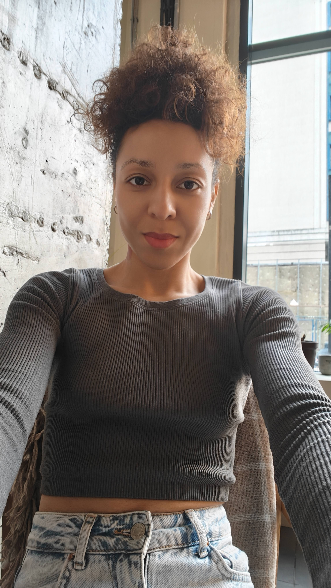

ОНЛАЙН · СОЗВОН С ВИДЕО
Личная консультация
Разбор твоей даты рождения, твоего запроса и текущего жизненного этапа.
ХОЧУ ЗАПИСАТЬСЯОСОБЕННОСТИ
По дате рождения я составляю полную картину из цифр (число сознания - кто ты, как ты воспринимаешь себя и мир, миссии - зачем ты здесь и реализации - как реализовать правильно свою миссию, а также матрицу), наличие или отсутствие определенных цифр влияют на твои достижения, фин возможности, отношения (личные, рабочие), здоровье.
У тебя уже есть конкретный запрос и ты его озвучиваешь, чтобы я сделала акцент именно на том, что тебя волнует в данный период. Или, возможно, ты просто хочешь получить инфо в целом и вопросы возникнут у тебя уже во время консультации.
ПОДГОТОВКА
Перед каждой встречей я готовлюсь именно к тебе
Заранее подбираю примеры, параллели, жизненные ситуации, через которые становится понятно на практике, а не в теории.

ЧТО ВХОДИТ В КОНСУЛЬТАЦИЮ
01 Твой запрос
О себе, реализации, финансах, отношениях с партнёром или ребёнком и других вопросах, которые актуальны для тебя сейчас.
02 Число Сознания, Миссии и Реализации
Разбираем три ключевых показателя и то, как они проявляются в твоей системе.
- слабые зоны, где энергия уходит «в минус»
- задачи, которые важно пройти
- внутренний конфликт между ЧС и ЧМ
- что усиливать в поведении
- что убирать
03 Взаимосвязь ЧС / ЧМ / ЧР
Здесь мы смотрим не на отдельные числа, а на их взаимодействие внутри твоей системы.
- как твои числа влияют друг на друга
- конфликтные связки
- как сбалансировать систему, если одно число «забирает власть»
04 Матрица финансов и жизненных линий
Разбираем финансовый потенциал, то, что можно усилить, и основные жизненные линии матрицы.
- линия финансовых возможностей
- линия эмоциональности
- линия ума
- линия цели
- линия внутренней гармонии и равновесия
- линия духовности
- линия интуиции
- линия реализации
ЛИЧНАЯ КОНСУЛЬТАЦИЯ
2 часа глубокого разбора
6000 грн / 118 €
Онлайн · Zoom
ХОЧУ ЗАПИСАТЬСЯЗапись через Директ Instagram